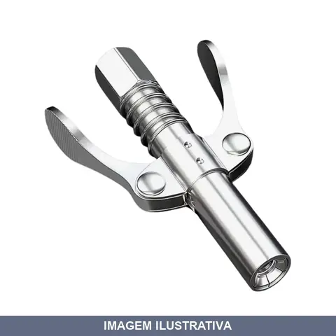
ACOPLADOR HIDRAULICO COM TRAVA REF.AHCT RF
Indicação de Uso: Acoplamento de mangueiras e tubulações em sistemas hidráulicos. Material e Resistência: Construído em metal para suportar pressão hidráulica. Vantagem Prática: Trava integrada garante fixação segura e evita desconexões acidentais durante operação.
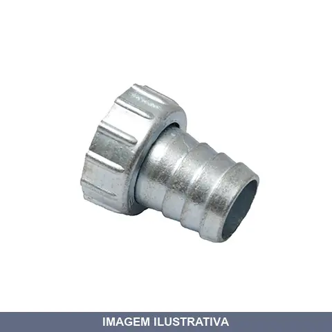
BICO TORNEIRA FERRO FICO
Bico para torneira em ferro, com conexões de entrada e saída. Indicação de Uso: Adaptação de mangueiras e conexões em torneiras e pontos de água. Material e Resistência: Ferro resistente à corrosão. Vantagem Prática: Permite encaixe seguro e prático de mangueiras em torneiras, facilitando a conexão de equipamentos como máquinas de lavar.
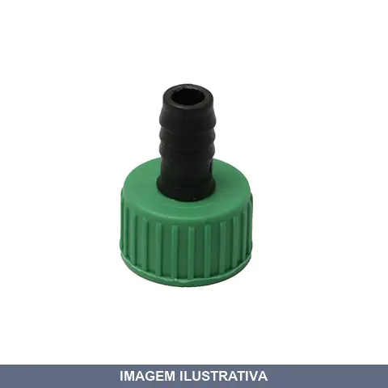
BICO TORNEIRA PVC MAC LOREN
Bico de torneira em PVC para conexão e direcionamento de fluxo de água. Indicado para instalações hidráulicas residenciais e comerciais. Material resistente e durável, adequado para uso em torneiras convencionais. Facilita a instalação e substituição em sistemas de abastecimento de água.
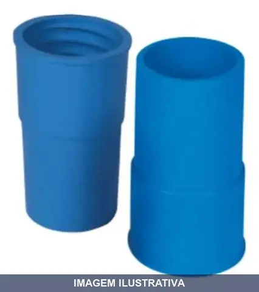
BOCAL BORRACHA MANGUEIRA DONATTI
Indicação de Uso: Acoplamento para conexão de mangueiras em sistemas de vazão de água, permitindo emendas e extensões de linhas hidráulicas em aplicações diversas. Material e Resistência: Borracha resistente com vedação eficaz contra vazamentos. Vantagem Prática: Rosca compatível para encaixe rápido e seguro em mangueiras padrão.
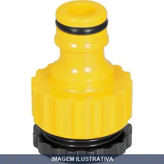
CONECTOR FEMEA COM BUCHA REDUCAO VONDER
Bucha de redução com rosca fêmea para adaptação de conexões hidráulicas. Permite conectar tubulações de diâmetros diferentes, reduzindo de uma medida maior para menor. Fabricada em plástico ABS de alta resistência. Indicada para sistemas de irrigação, jardim e engate rápido. Facilita o acoplamento entre mangueiras e torneiras com medidas incompatíveis.
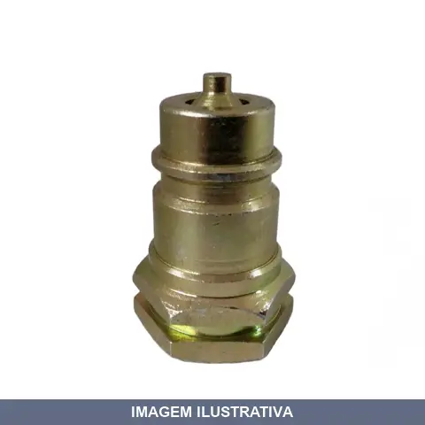
CONEXAO ENGATE RAPIDO FEMEA /2NPT AGRICOLA LUBEFER
Indicação de Uso: Sistemas hidráulicos de tratores e implementos agrícolas, proporcionando conexão rápida e segura. Material e Resistência: Fabricado em aço carbono, com tratamento térmico para resistência a pressões elevadas. Atende à norma ISO 7241-1 A, pressão de 300 bar. Vantagem Prática: Válvulas automáticas bloqueiam simultaneamente o fluxo no desacoplamento e no acoplamento, reabilitando a pressão ao conectar.
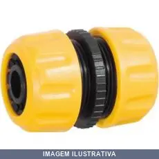
EMENDA DE MANGUEIRA VONDER
Emenda para mangueira 1/2" VONDER 31.98.012.003 VONDER Conteúdo da Embalagem: 1 Emenda para mangueira Indicada para emendar mangueiras de jardim de 1/2" Fabricada em plástico ABS de alta resistência
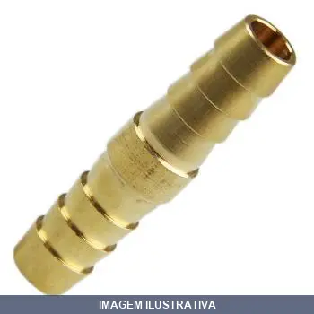
EMENDA METAL LUBEFER
Emenda metálica para tubulações hidráulicas e pneumáticas. Fabricada em metal, proporciona conexão segura entre mangueiras e componentes. Aplicação em sistemas de hidráulica, pneumática e linhas de ar comprimido. Facilita montagem, desmontagem e manutenção de instalações.
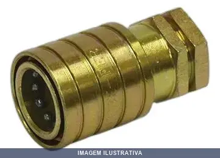
ENGATE RAPIDO AGRICOLA FEMEA LUBEFER
Indicação de Uso: Engate rápido para sistemas agrícolas com conexão hidráulica ou pneumática. Indicado para implementos e máquinas agrícolas que utilizam acoplamento por pressão. Material e Resistência: Construído em metal para resistir às condições de uso em ambientes rurais. Vantagem Prática: Permite conexão e desconexão rápida sem ferramentas, facilitando a troca de implementos e reduzindo tempo de preparação de máquinas agrícolas.
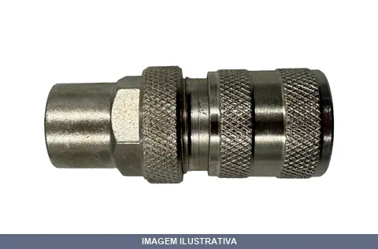
ENGATE RAPIDO AUTOMOTIVO FEMEA M . 137T MODERNO
Indicação de Uso: Conexão rápida para sistemas hidráulicos e pneumáticos automotivos. Material e Resistência: Construção resistente adequada para aplicações sob pressão. Vantagem Prática: Acoplamento rápido sem necessidade de ferramentas, facilita conexões e desconexões em manutenção e operação.
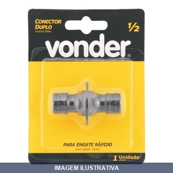
ENGATE RAPIDO CONECTOR DUPLO VONDER
ENGATE RAPIDO 1/2'' CONECTOR DUPLO VONDER Indicado para uso em mangueiras Fabricado em plástico ABS de alta resistência
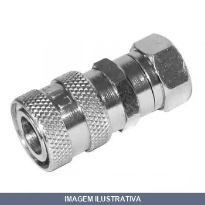
ENGATE RAPIDO ESFERA FEMEA 102E RF
Indicação de Uso: Acoplamento rápido para sistemas de ar comprimido, água e fluidos em geral. Material e Resistência: Construído em metal, com corpo cilíndrico que permite conexão e desconexão ágil sem vazamentos. Vantagem Prática: Facilita a troca de ferramentas e acessórios pneumáticos e hidráulicos com rapidez e segurança.
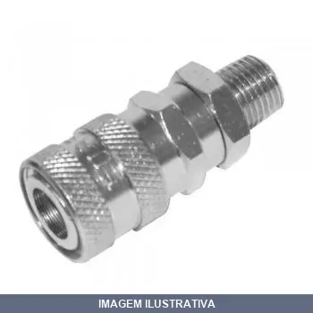
ENGATE RAPIDO ESFERA MACHO 104E RF
RF104E - ENGATE RAPIDO 1/4 ESFERA ROSCA MACHO 3/8 NPT
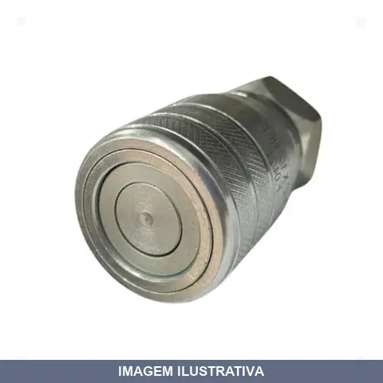
ENGATE RAPIDO HIDR ACOPL FEMEA NPT FACE PLANA
Acoplamento hidráulico fêmea de face plana com rosca NPT. Indicado para sistemas hidráulicos que exigem vedação rápida e segura. Bloqueio simultâneo do fluxo no desacoplamento minimiza vazamento de fluido e protege contra contaminação. Construção em aço carbono ou inox com anéis de vedação e válvulas de retenção interna. Padrão ISO 16028. Aplicável em máquinas agrícolas, construção pesada, mineração e equipamentos hidráulicos industriais.
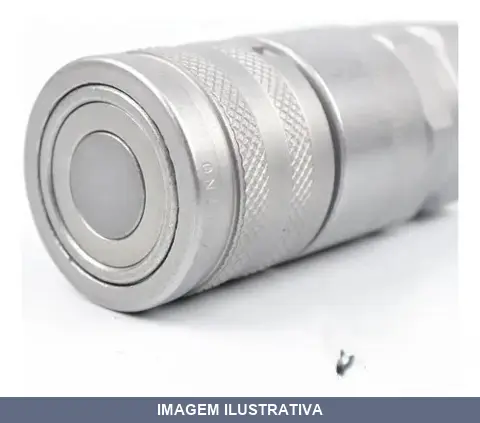
ENGATE RAPIDO HIDR ACOPL FEMEA NPT FACE PLANA IME
Indicação de Uso: Sistemas hidráulicos e pneumáticos que demandam conexões rápidas e seguras. Material e Resistência: Acabamento superficial em Zinco Trivalente. Travamento por esferas de aço polida. Anéis anti-extrusão em PTFE. Vedação em NBR (Borracha Nitrílica). Padrão ISO 16028. Vantagem Prática: Design de face plana bloqueia simultaneamente o fluxo no desacoplamento, minimizando perda de fluido e protegendo o sistema contra contaminações externas.
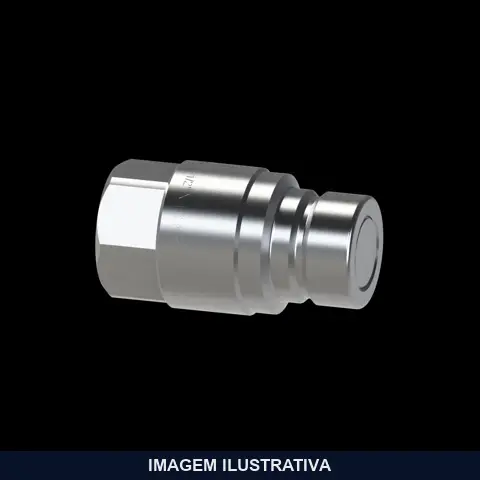
ENGATE RAPIDO HIDR PINO MACHO NPT FACE PLANA IM
Indicação de Uso: Para sistemas hidráulicos em máquinas agrícolas, terraplanagem, construção civil, ferramentas hidráulicas e aplicações industriais. Material e Resistência: Aço carbono com tratamento anticorrosivo. Travamento por esferas de aço e vedação em NBR. Atende norma ISO 16028. Vantagem Prática: Conexão rápida empurrando o pino macho. Bloqueio automático no desacoplamento reduz vazamentos e protege contra contaminantes.
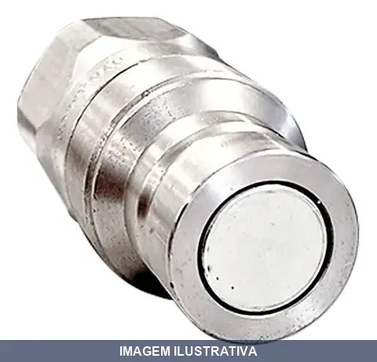
ENGATE RAPIDO HIDR PINO MACHO NPT FACE PLANA IMEC
Indicação de Uso: Sistema de conexão macho para equipamentos hidráulicos em máquinas agrícolas, terraplanagem, construção e sistemas industriais. Material e Resistência: Aço com acabamento em Zinco Trivalente, travamento por esferas de aço polida, anéis anti-extrusão em PTFE, vedação em NBR. Norma ISO 16028. Vantagem Prática: Conexão por retração da capa, minimiza vazamentos de fluido e protege contra contaminações externas durante acoplamento.
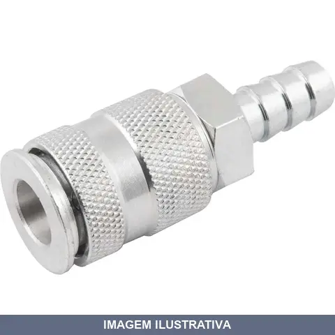
ENGATE RAPIDO INDUSTRIAL ESPIGAO 128E RF
Indicação de Uso: Acoplamento rápido para sistemas hidráulicos e pneumáticos em aplicações industriais. Material e Resistência: Construído em metal para suportar pressão em ambientes de trabalho pesado. Vantagem Prática: Permite conexão e desconexão rápida sem necessidade de ferramentas, reduzindo tempo de operação.
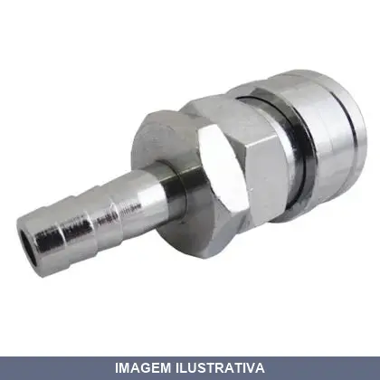
ENGATE RAPIDO INDUSTRIAL ESPIGAO 135E RF
Indicação de Uso: Acoplamento rápido para sistemas hidráulicos e pneumáticos em aplicações industriais. Material e Resistência: Construído em metal para suportar pressão em ambientes de trabalho pesado. Vantagem Prática: Permite conexão e desconexão rápida sem necessidade de ferramentas, reduzindo tempo de operação.
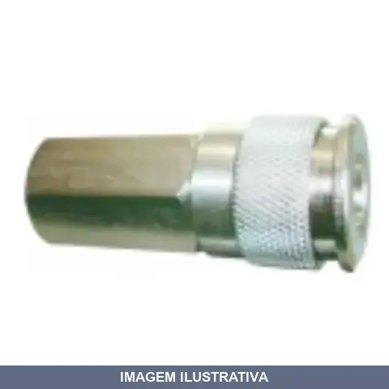
ENGATE RAPIDO INDUSTRIAL FEMEA 121E RF
Indicação de Uso: Conexão rápida para sistemas hidráulicos e pneumáticos em aplicações industriais. Material e Resistência: Construção em metal para uso em ambientes de trabalho exigentes. Vantagem Prática: Acoplamento rápido tipo fêmea que facilita conexões e desconexões sem necessidade de ferramentas adicionais.
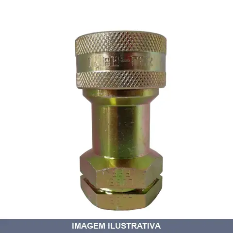
ENGATE RAPIDO INDUSTRIAL FEMEA HIDRAULICO LUBEFER
Engate rápido hidráulico industrial de construção robusta com rosca fêmea. Atende norma ISO 7241-1 A. Possuí válvulas automáticas de ação rápida que bloqueiam simultaneamente o fluxo hidráulico no desacoplamento e acoplamento. Aplicação em transferência de fluidos e sistemas hidráulicos. Material em aço com acabamento bicromatizado. Vedação com borracha nitrílica/teflon. Travamento com esferas radiais.
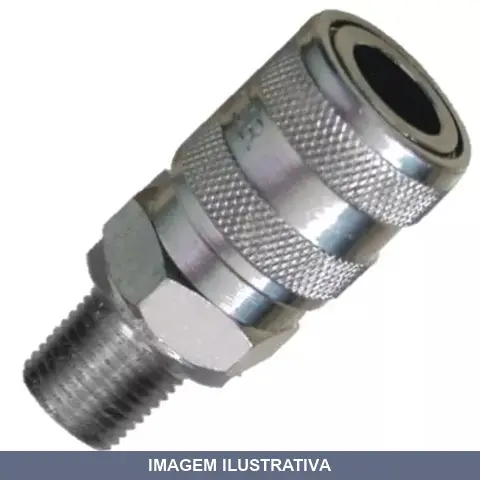
ENGATE RAPIDO INDUSTRIAL MACHO 126E RF
Indicação de Uso: Conexão rápida de mangueiras e equipamentos em sistemas hidráulicos e pneumáticos industriais. Material e Resistência: Construção em metal, adequada para aplicações de média pressão. Vantagem Prática: Encaixe rápido macho com acoplamento sem necessidade de ferramentas, facilitando montagens e desmontagens frequentes.
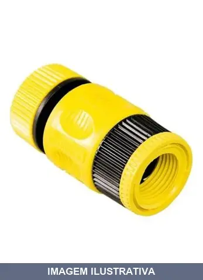
ENGATE RAPIDO PVC PARA TORNEIRA MAGICK
Engate rápido em PVC com conexão para mangueira. Conexão fêmea de 1/2 polegada, adaptável para 3/4 polegada. Permite conexão e desconexão rápida da mangueira à torneira. Fabricado em PVC durável para ambientes externos.
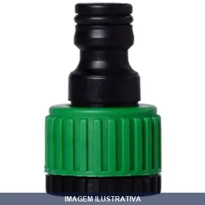
ENGATE RAPIDO PVC PARA TORNEIRA PP -N MACLOREN
Indicação de Uso: Engate rápido para conexão e desconexão de torneiras. Material e Resistência: Fabricado em PVC, resistente a pressão de água. Vantagem Prática: Permite acoplamento rápido sem necessidade de ferramentas, facilitando a troca e manutenção de torneiras.
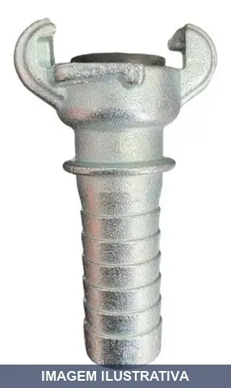
ENGATE TIPO ORELHA ESPIGAO EUE34 RF
EUE34 - ENGATE UNIVERSAL TIPO ORELHA ESPIGÃO MANGUEIRA 3/4''
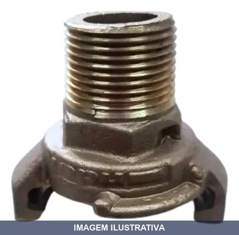
ENGATE TIPO ORELHA ROSCA MACHO EUM34 RF
Indicação de Uso: Engate para sistemas hidráulicos e pneumáticos, proporcionando conexão rápida e segura em mangueiras e tubulações. Material e Resistência: Construído em metal, resistente à pressão típica de aplicações industriais. Vantagem Prática: Rosca macha facilita instalação direta em componentes fêmea, com design tipo orelha para empunhadura durante manuseio e encaixe.
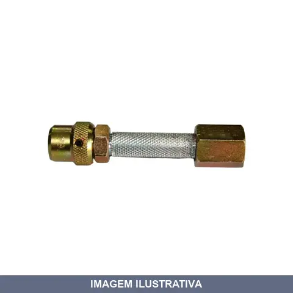
ESGUICHO AÇO LUBEFER
Indicação de Uso: Esguicho regulável para sistemas de lavagem de alta pressão, acoplado a mangueiras de borracha. Material e Resistência: Corpo e cabeçote em aço, porcas em aço, giclê em aço inox. Suporta pressão de trabalho de até 450 lbs. Cabeça regulável tipo Wayne controla a saída e leque de água. Vantagem Prática: Facilita manuseio em operações de limpeza com controle regulável do fluxo.
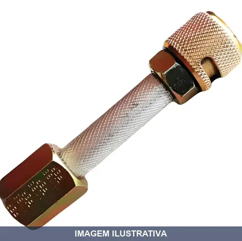
ESGUICHO AÇO REGULAVEL LUBEFER
Indicação de Uso: Para lavagem de autos e lubrificação de equipamentos. Cabeça regulável que controla saída e leque de água tipo Wayne acoplado a mangueira. Material e Resistência: Corpo, cabeça e porcas em aço. Giclê em aço inox. Suporta pressão de trabalho até 450 lbs/psi. Vantagem Prática: Jato regulável adapta-se entre fluxo fino e concentrado ou jato amplo conforme necessidade.
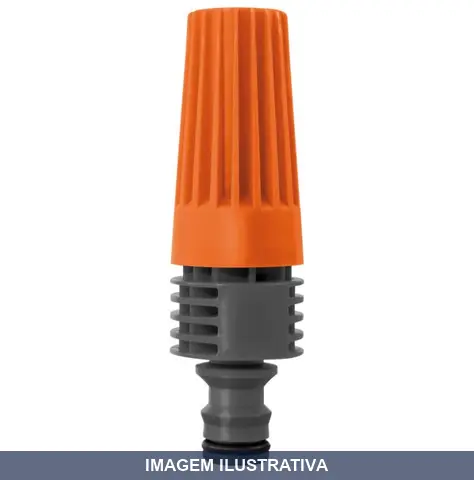
ESGUICHO COM ENGATE RAPIDO TRAMONTINA
Esguicho em plástico com engate rosqueado e jato regulável. Possui sistema de regulagem do fluxo d'água através do regulador frontal para controlar a intensidade da água. Adequado para conexão em mangueiras de 1/2". Indicado para irrigação de jardim, horta doméstica e limpeza em geral. Fabricado com matéria-prima resistente e durável.
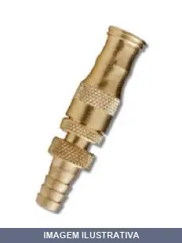
ESGUICHO ECLIPSE LATAO LUBEFER
ESGUICHO PARA MANGUEIRA COM ESCAMA DE 1/2 LATÃO ESGUICHO ECLIPSE 1/2 LATAO Esguicho Eclipse Com robustez e durabilidade, o esguicho eclipse é super resistente a impactos. Elegância e tradição também são características deste esguicho. Proporciona excelente controle sobre o jato de água. Utilidade Uso doméstico e profissional.
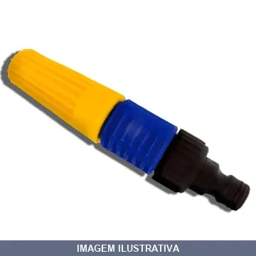
ESGUICHO PARA AGUA ENGATE RAPIDO MACLOREN
Esguicho de plástico com engate rápido para mangueiras, equipado com regulador de fluxo frontal. Permite controle preciso do jato de água durante irrigação e limpezas. Conexão por engate rápido sem necessidade de ferramentas.
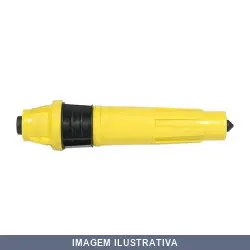
ESGUICHO PARA AGUA PLUS POTE MAGICK
Esguicho para água modelo 26A. Indicado para uso em aplicações que exigem distribuição de água, como irrigação, limpeza e rega de plantas. Material resistente adequado para aplicação de líquidos. Bico em formato cônico para manuseio prático do produto.
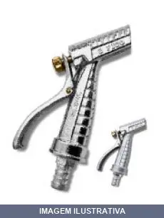
ESGUICHO REVOLVER FERRO/PRATA FICO
ESGUICHO REVOLVER TRADICIONAL 1/2'' PRATA Esguicho Tradicional O esguicho tradicional, confeccionado inteiramente em aço, proporciona um produto robusto, resistente e encorpado, garantindo qualidade e precisão em qualquer trabalho, contando com mais de 40 anos de tradição. Utilidade Cuidar do jardim, lavar calçadas, carros, quintais e etc. O esguicho tradicional também é compatível com compressores de ar.
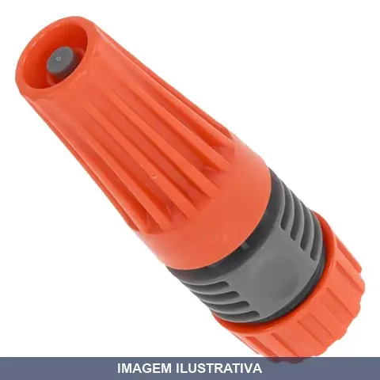
ESGUICHO TRAMONTINA
Indicação de Uso: Esguicho para irrigação e limpeza geral. Material e Resistência: Construído em plástico resistente, leve e prático para uso doméstico. Vantagem Prática: Permite regulagem de vazão e padrão de jato para diferentes necessidades de aplicação.
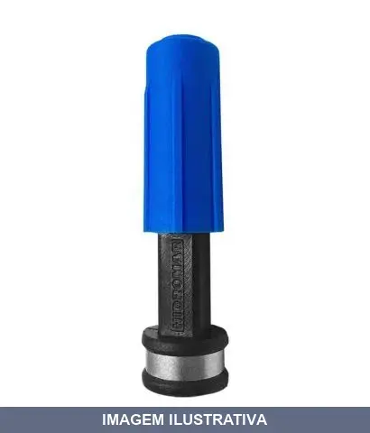
ESGUICHO X AZUL PLAST HYDROLUBZ
Indicação de Uso: Esguicho para irrigação e sistemas de água. Material e Resistência: Plástico resistente. Vantagem Prática: Distribuição uniforme de água em jardins, hortas e limpeza geral.
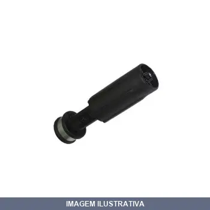
ESGUICHO X PRETO PLAST HYDROLUBZ
ESGUICHO 3,2MM - ENTRADA 1/2 PRETO Ref. 5759 Esguicho 3,2 mm Entrada de 1/2"
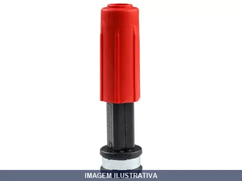
ESGUICHO X VERMELHO PLAST HYDROLUBZ
Esguicho para mangueira com entrada de 1/2", saída com orifício de 2,2 mm e corpo em plástico na cor vermelha. Indicação de Uso: Irrigação, limpeza e pulverização em áreas externas. Vantagem Prática: Controle de vazão ajustável através do orifício calibrado, proporciona jato concentrado e eficiente. Ref. 5759
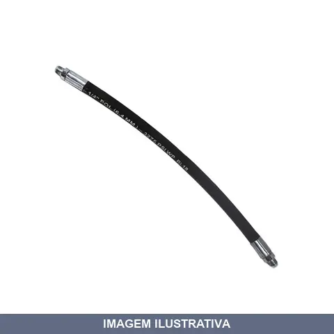
EXTENSAO FLEXIVEL PARA BOMBA DE GRAXA LUBEFER
RF53 EXTENSAO FLEXIVEL 450MM MAG 3/16 ROSCA 1/8 Terminais rosca macho 1/8" NPT Mangueira 1 trama de aço Pressão: 3000 psi Conexões prensadas
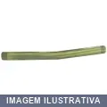
EXTENSAO RIGIDA CURVA PARA BOMBA DE GRAXA LUBEFER
RF50 EXTENSAO RIGIDA ANGULAR 120M ROSCA 1/8 NPT Aço zincado amarelo Rosca macho 1/8" NPT Diâmetro tubo 10 mm
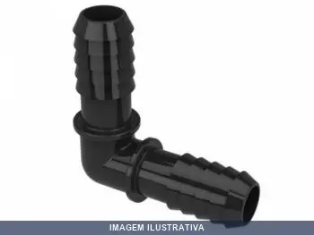
JOELHO POLIETILENO DUPLO 1/2 AKATO
Joelho interno duplo em polietileno com ângulo de 90°, indicado para sistemas de tubulação e irrigação. Fabricado em polietileno de alta resistência com durabilidade, resistente à corrosão e infiltração. Instalação por encaixe duplo, proporcionando conexões seguras em mangueiras e tubulações de mesma bitola.

JOELHO POLIETILENO DUPLO AKATO
Indicação de Uso: Conexão e direcionamento de fluxo em sistemas hidráulicos e de irrigação. Material e Resistência: Polietileno duplo, resistente a pressão e intempéries. Vantagem Prática: Facilita mudanças de direção em tubulações com instalação rápida e segura.
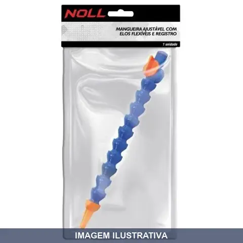
MANGUEIRA AJUSTAVEL COM ELOS FLEXIVEIS COM REGISTRO NOLL
MANGUEIRA AJUSTAVEL COM ELOS FLEXIVIVEIS E REGISTRO 1/4'' X 330 REF: BSP
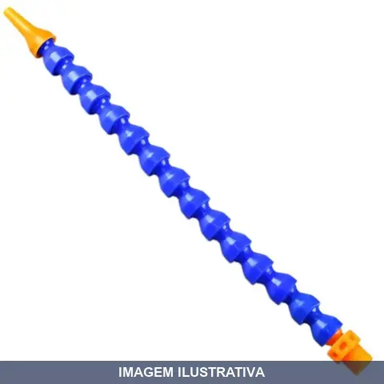
MANGUEIRA AJUSTAVEL COM ELOS FLEXIVEIS SEM REGISTRO NOLL
MANGUEIRA AJUSTAVEL COM ELOS FLEXIVEIS 1/4'' X 330 REF: BSP
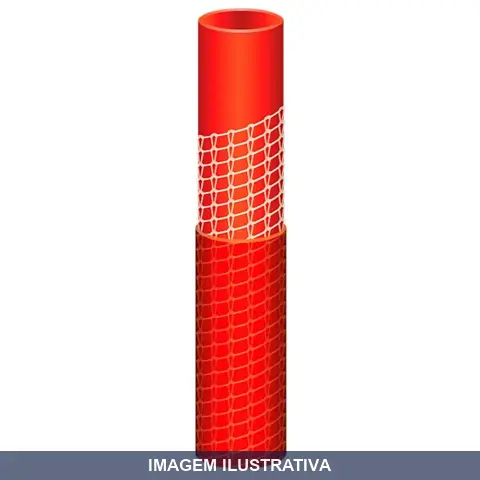
MANGUEIRA ANTITORCAO MULTI ATS TRAMONTINA
Indicação de Uso: Condução de água e fluidos em geral. Ideal para uso em jardins, torneiras, sistemas de irrigação e limpeza. Material e Resistência: Construção em material resistente à torção, evitando entortamentos e nós durante o uso. Vantagem Prática: Design anti-torção que facilita o manuseio e prolonga a durabilidade da mangueira.
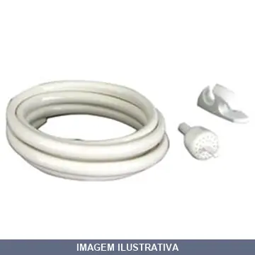
MANGUEIRA BRANCA DESVIADOR CHUVEIRO LORENZETTI
Indicação de Uso: Desviador para duchas e chuveiros elétricos Lorenzetti, compatível com toda a linha da marca. Ideal para desviar água e usar ducha manual, além de limpar o banheiro e lavar utensílios. Material e Resistência: Confeccionado em plástico, termoplásticos e PVC. Inclui mangueira lisa, suporte para ducha manual e desviador. Abre e fecha com leve toque. Vantagem Prática: Instalação simples em toda a linha de duchas Lorenzetti. Kit completo com mangueira e suporte incluso.
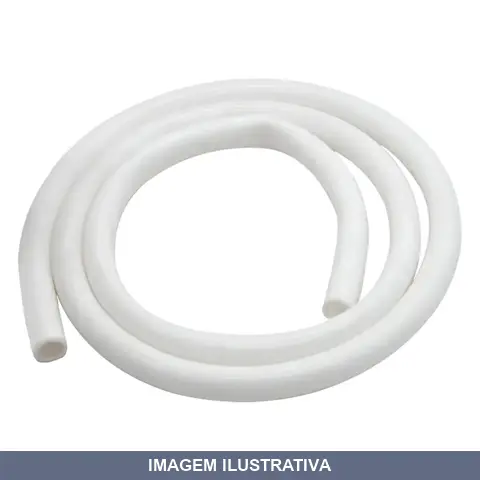
MANGUEIRA BRANCA PARA CHUVEIRO WTEC
Indicação de Uso: Chuveiro e sistemas de água quente. Material e Resistência: Mangueira branca de borracha. Vantagem Prática: Flexibilidade e durabilidade para conexão entre registro e chuveiro.
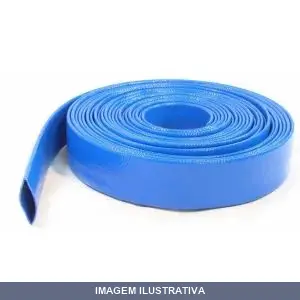
MANGUEIRA CHATA FLAT AZUL
Mangueira achatada indicada para fornecimento, abastecimento e descarga de água em caminhões pipa, irrigação, cascalhos, líquidos pastosos, mineração, drenagem e construção civil com baixa pressão. Fabricada com tubo interno de PVC flexível, reforçada com fios de poliéster e cobertura externa em PVC flexível. Temperatura de trabalho: -5°C a +65°C. Pressão de trabalho: 4 bar. Design achatado facilita transporte e armazenamento em espaços reduzidos.
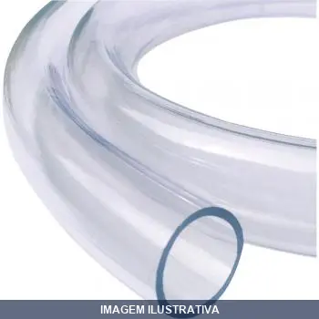
MANGUEIRA CRISTAL
MANGUEIRA CRISTAL 1/4 X 1,5 IBIRA ROLO C/50 METROS TUBO CRISTAL É FABRICADO EM PVC (POLICLORETO DE VINILA) FLEXIVEL É INDICADO PARA DIFERENTES APLICAÇÕES NA PASSAGEM DE LIQUIDOS

MANGUEIRA CRISTAL .
MANG PVC 3/8''X1,5 CRISTAL IBIRA ROLOC/ 50 METOS TUBO CRISTAL É FABRICADO EM PVC (POLICLORETO DE VINILA) FLEXIVEL É INDICADO PARA DIFERENTES APLICAÇÕES NA PASSAGEM DE LIQUIDOS
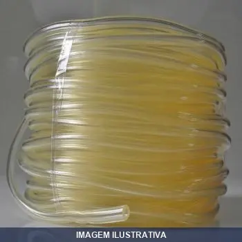
MANGUEIRA CRISTAL GASOLI
MANGUEIRA PVC 5,0 X 2,5 CRISTAL ( ROLO COM 50 METROS) TUBO CRISTAL É FABRICADO EM PVC (POLICLORETO DE VINILA) FLEXIVEL É INDICADO PARA APLICAÇÕES NA PASSAGEM DE GASOLINA
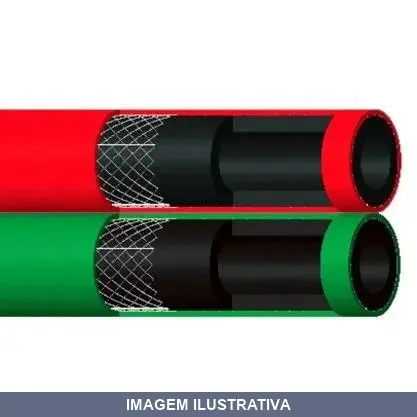
MANGUEIRA DUPLA SOLDA VERDE E VERMELHA
Indicação de Uso: Mangueira dupla para sistemas de solda e corte oxiacetilênico, indicada para soldagem em geral em oficinas, funilarias e canteiros de obras. Material e Resistência: Tubo interno em PVC flexível com reforço de fios de poliéster, dupla geminada com cores padronizadas (verde para oxigênio e vermelha para acetileno). Pressão de trabalho até 300 PSI (21 bar). Vantagem Prática: Construção geminada facilita a instalação e organização, com alta flexibilidade para manuseio prático.
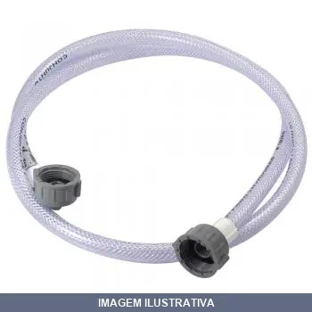
MANGUEIRA ENTRADA LAVADORA
MANGUEIRA ENTRADA 3/8'' X 1,40 METROS CINZA VAL 14 FIOS TUBO CRISTAL É FABRICADO EM PVC (POLICLORETO DE VINILA) , REFORÇADA COM UMA CAMADA DE FIOS DE POLIESTER E COBERTURA EM PVC FLEXIVEL É INDICADO PARA USO DOMESTICO NA ENTRADA DE AGUA EM MAQUINAS DE LAVAR ROUPA E LAVADORAS DE PRATOS

MANGUEIRA ESPIRAL .0MTX SEM PISTOLA AZUL
Indicação de Uso: Para sistemas de ar comprimido, compressores e ferramentas pneumáticas em oficinas, indústrias e aplicações gerais. Material e Resistência: Fabricada em poliuretano (PU) ou nylon de alta resistência, com formato espiral que evita emaranhados e facilita o manuseio. Vantagem Prática: Design espiralado oferece flexibilidade, mantém a organização do ambiente e permite armazenamento.
MANGUEIRA ESPIRAL .5MTX COM PISTOLA 03 8MM
Indicação de Uso: Mangueira espiral para uso com ar comprimido em aplicações pneumáticas gerais. Acompanha pistola de sopro para controle de fluxo de ar. Material e Resistência: Construção em espiral para maior durabilidade e resistência a pressão. Vantagem Prática: Pistola integrada permite controlar o fluxo de ar sem necessidade de acessórios adicionais.
MANGUEIRA ESPIRAL .5MTX COM PISTOLA 03 8MM [023674]
Indicação de Uso: Ideal para limpeza, lavagem e irrigação em ambientes residenciais e comerciais. Material e Resistência: Construção em espiral para flexibilidade e resistência a pressão. Vantagem Prática: Acompanha pistola vermelha para controle de fluxo de água durante uso.

MANGUEIRA ESPIRAL .5MTX COM PISTOLA 07 8MM
Indicação de Uso: Limpeza e sopro com ar comprimido em ambientes externos e internos. Material e Resistência: Mangueira em espiral, resistente e flexível. Acompanha pistola para controle de fluxo. Vantagem Prática: Facilita o manuseio e armazenamento devido ao formato espiral.
![MANGUEIRA ESPIRAL .5MTX COM PISTOLA 07 8MM [023687]](fotos/023687.webp)
MANGUEIRA ESPIRAL .5MTX COM PISTOLA 07 8MM [023687]
Mangueira em espiral com pistola vermelha acoplada. Indicada para uso em sistemas de ar comprimido, limpeza e abastecimento. Material flexível adequado para trabalhos em oficinas, garagens e canteiros de obra. Pistola facilita o manuseio e controle do fluxo durante a aplicação.
MANGUEIRA ESPIRAL .5MTX SEM PISTOLA AZUL
Mangueira espiral em poliuretano (PU), azul, sem pistola. Fabricada em material flexível e resistente com formato espiral que facilita manuseio e armazenamento. Indicada para sistemas de ar comprimido, conexão de ferramentas pneumáticas, bicos de limpeza e pulverizadores. Resistente a abrasão, óleos, solventes e intempéries. Proporciona praticidade na montagem com organização do ambiente de trabalho.
![MANGUEIRA ESPIRAL .5MTX SEM PISTOLA VERMELHA 03 8MM [023683]](fotos/023683.webp)
MANGUEIRA ESPIRAL .5MTX SEM PISTOLA VERMELHA 03 8MM [023683]
Indicação de Uso: Mangueira para aplicações pneumáticas e hidráulicas em geral. Material e Resistência: Construção em espiral com revestimento resistente. Vantagem Prática: Formato espiral facilita armazenamento e manuseio.
MANGUEIRA ESPIRAL .5MTX SEM PISTOLA VERMELHA 07 8MM [023715]
Indicação de Uso: Mangueira para uso em aplicações com ar comprimido, água e fluidos de baixa pressão. Material e Resistência: Construção em espiral com revestimento resistente. Vantagem Prática: Flexibilidade e facilidade de manuseio, sem necessidade de pistola acoplada.
MANGUEIRA FLEXIVEL MAGICA MTS NOLL
Indicação de Uso: Mangueira flexível indicada para uso em hidráulica, irrigação e abastecimento de água em geral. Material e Resistência: Construção em material flexível resistente. Vantagem Prática: Facilita o acesso a áreas de difícil alcance por sua flexibilidade e comprimento.
MANGUEIRA IRRIGACAO POR GOTEJAMENTO 10MIL /H/M IRRITEC
Mangueira gotejadora para irrigação localizada. Indicação de Uso: sistemas de rega em cultivos anuais como legumes, folhosas e frutas. Oferece aplicação uniforme de água com gotejamento controlado, otimizando o consumo hídrico. Vantagem Prática: reduz desperdício de água e proporciona boa relação custo-benefício em projetos de irrigação.
MANGUEIRA JARDIM IBIRA
CONJUNTO TRANÇADA CRISTAL 10 METROS MANGUEIRA JARDIM JET LINE CRISTAL COM 10 METROS TUBO CRISTAL É FABRICADO EM PVC (POLICLORETO DE VINILA) , REFORÇADA COM UMA CAMADA DE FIOS DE POLIESTER E COBERTURA EM PVC FLEXIVEL É INDICADA PARA JARDINAGEM EM GERAL NF 188116 REF: 1701 - JARDIM JET LINE CRISTAL PACOTE COM 10 X 10 METROS
MANGUEIRA JARDIM SILICONADA
Indicação de Uso: Mangueira flexível destinada a rega e irrigação de jardins e áreas externas. Material e Resistência: Construída em silicone, oferecendo flexibilidade e durabilidade para uso em ambientes externos. Vantagem Prática: Facilita o transporte e armazenamento pela flexibilidade do material, adequada para tarefas de jardinagem e limpeza.
MANGUEIRA LAVA JATO PT PSI AZUL WTEC/HIMAFLEX
Indicação de Uso: Limpeza com equipamentos de alta pressão e lavadoras. Material e Resistência: Mangueira resistente a pressão de até 1200 PSI, apropriada para água em alta pressão. Vantagem Prática: Conduto flexível para conexão em lavadoras e sistemas de lava jato, facilitando o direcionamento do jato de água.

MANGUEIRA LAVA JATO PT2500 AZUL IBIRA
Indicação de Uso: Mangueira específica para equipamentos de limpeza por pressão (lava jatos). / Material e Resistência: Construção reforçada, pressão de trabalho 2.500 PSI, pressão de ruptura 7.500 PSI. / Vantagem Prática: Resistência à alta pressão e durabilidade para trabalhos contínuos de limpeza.
MANGUEIRA LONADA ADIT COM BOR IBIRA
Mangueira lonada aditivada com borracha nitrílica, fabricada em PVC com cobertura em trança de algodão. Indicada para aplicações automotivas que demandam flexibilidade e resistência. Material: estrutura em PVC aditivado com NBR e revestimento têxtil. Vantagem prática: resiste a abrasão e oferece durabilidade em ambientes com variação de temperatura.
MANGUEIRA MICROFUROS COM METROS MODELO I VONDER
Indicação de Uso: Irrigação e rega de plantas, hortas e jardins. Material e Resistência: Mangueira com microfuros distribuídos ao longo do comprimento para liberação controlada de água. Vantagem Prática: Permite irrigação uniforme e eficiente com redução de desperdício de água.
MANGUEIRA MICROFUROS COM METROS SANTENO
Mangueira com microfuros para irrigação por gotejamento. Indicação de Uso: Pequenas áreas, jardins e hortas domésticas. Material e Resistência: Parede de 250 micras, perfurações a raio laser, 40 furos por metro linear com vazão de 147 L/h. Vantagem Prática: Distribuição uniforme de água com faixa molhada de 3 metros, reduzindo desperdício.
MANGUEIRA MULTIUSO WTEC
Indicação de Uso: Mangueira versátil para aplicações gerais em sistemas hidráulicos, pneumáticos e de água. Material e Resistência: Construção robusta adequada para múltiplos usos. Vantagem Prática: Compatível com conexões padrão, oferecendo praticidade para diferentes tipos de trabalho em residências e ambientes comerciais.

MANGUEIRA MULTIUSO WTEC/HIMAFLEX
Indicação de Uso: Mangueira versátil indicada para aplicações gerais em sistemas de ar comprimido, água e outros fluidos. Material e Resistência: Estrutura reforçada resistente a pressão. Vantagem Prática: Flexibilidade para instalação em espaços reduzidos e facilidade de manuseio em diferentes ambientes de trabalho.
MANGUEIRA OLEO E DERIVADO
Mangueira de borracha para transferência e descarga de óleos e derivados de petróleo, como gasolina, diesel, biodiesel e álcool. Fabricada com tubo interno e cobertura em borracha sintética, reforçada com lonas e espiral de aço. Resistente a ar, água, produtos químicos e soluções salinas. Indicada para operações em indústrias petroquímicas, terminais de armazenamento, postos de combustível e oficinas mecânicas.

MANGUEIRA OLEO E DERIVADO 150PSI SUCCAO E
Indicação de Uso: Para sucção e descarga de óleos, combustíveis e derivados de petróleo em sistemas industriais, refinarias, postos de abastecimento e tanques estacionários. Material e Resistência: Tubo interno em borracha sintética resistente a óleos e derivados. Reforço com lonas sintéticas e espiral de aço. Cobertura em borracha sintética resistente a abrasão e intempéries. Suporta pressão de trabalho até 150 PSI (10,3 bar). Vantagem Prática: Construção reforçada garante durabilidade em
MANGUEIRA OLEO E GRAXA PT150 BORRACHA
Indicação de Uso: Condução de óleo e graxa em sistemas hidráulicos e pneumáticos. Material e Resistência: Borracha, resistente à pressão de 150 PSI. Vantagem Prática: Mangueira flexível para instalação em equipamentos industriais e de manutenção.

MANGUEIRA OLEO E GRAXA PT350 IBIRA
Mangueira flexível para condução de óleos e graxas em sistemas de lubrificação e abastecimento. Tubo interno em PVC flexível reforçado com camada de fios de poliéster e cobertura em PVC flexível. Resistente a abrasão e flexibilidade para instalação em equipamentos de lubrificação centralizada e sistemas hidráulicos. Indicação de Uso: Equipamentos de lubrificação, sistemas de óleo e graxa / Material e Resistência: Reforço em poliéster com cobertura em PVC flexível, resistente a abrasão /
MANGUEIRA OLEO E GRAXA PT350 WTEC
Mangueira para condução de óleos, graxas, piche e solventes em sistemas de lubrificação. Construção com tubo interno de PVC flexível reforçado com fios de poliéster e cobertura externa em PVC flexível. Suporta pressão de 350 PSI (24,5 bar). Temperatura de operação entre +5°C e +35°C. Válida até 60 meses armazenada em local protegido da luz solar e umidade.
MANGUEIRA PARA BALDE MANUAL DE GRAXA M M F GAS LUB
Mangueira para balde manual de graxa com terminais macho e fêmea. Indicada para lubrificação de máquinas, equipamentos automotivos e maquinário industrial. Material resistente para alta pressão de trabalho até 3.000 PSI, com trama de aço proporcionando durabilidade.
MANGUEIRA PARA DESCARGA DE ASFALTO QUENTE 150PSI
Indicação de Uso: Condução, sucção e descarga de asfalto quente e derivados de petróleo em alta temperatura. Material e Resistência: Constituída de borracha e lonas sintéticas resistente a abrasão, com cobertura de borracha sintética resistente ao tempo e intempéries. Pressão de trabalho de 150 PSI. Vantagem Prática: Resistência à alta temperatura, aos derivados de petróleo e às intempéries para operações contínuas.
MANGUEIRA PARA DESCARGA DE PETROLEO COM CABO ANTI-ESTATICO
MANGUEIRA BALFLEX OILTANK DESCARGA 3'' - 10BAR / 150PSI -40º A +100º-----40% AROMÁTICOS Mangueira de Mandril Rígido para Descarga de Petróleos 10MPa / 150PSI Reforçada com tramas de fibra sintética e cabo anti-estático descarga de petróleos, gasolina, diesel e óleos
MANGUEIRA PARA GAS
Mangueira flexível para gás liquefeito de petróleo (GLP) com tubo interno em PVC, reforçada com camada de fios de poliéster e cobertura externa em PVC flexível. Indicação de Uso: instalações domésticas de gás. Oferece resistência e flexibilidade para aplicações em ambientes residenciais.
MANGUEIRA PARA LIGA DE GAS FLEX KIT ESP E ESP BLUKIT
Ligação flexível para instalação de gás, fabricada com malha de aço inoxidável que oferece resistência a intempéries, flexibilidade e absorção de ruídos. Indicada para fogões, aquecedores de passagem e fogões industriais. Material: liga de cobre, elastômeros e aço inoxidável. Acompanha abraçadeiras para fixação segura.
MANGUEIRA PARA LIGACAO DE GAS FLEX FEMEA/FEMEA BRUKIT
Mangueira flexível para ligação de gás, com conexões fêmea em ambas as pontas. Fabricada em aço inoxidável AISI 304 com malha de reforço. Indicada para instalação segura de gás GLP (gás liquefeito de petróleo) e GN (gás natural) em fogões, aquecedores e equipamentos similares. Suporta pressão máxima de 15 BAR e temperatura até 120°C. Conforme norma NBR 13419. Acompanha borracha de vedação. Não deve ser embutida em paredes.
MANGUEIRA PARA LIGACAO DE GAS FLEX FEMEA/MACHO BRUKIT
Mangueira flexível para ligação de gás com revestimento em malha de aço. Conexões macho e fêmea. Indicada para transporte seguro de gás GLP e GN em instalações domésticas e comerciais. Aplica-se a fogões, aquecedores e equipamentos de queima em geral.
MANGUEIRA PETROLEO MARROM TROPICAL
MANGUEIRA MARROM PETROLEO 2POLEGADAS NAC Serviços de sucção e descarga de produtos derivados do petróleo e grande variedade de produtos químicos.
MANGUEIRA PISCINA FLUTUANTE WTEC/HIMAFLEX
Indicação de Uso: Limpeza de piscinas. Material e Resistência: Fabricado em EVA/PEAD. Vantagem Prática: Flutuante, flexível e translúcida, facilitando o uso e a visualização.
MANGUEIRA PNEUMATICA PT PSI IBIRA
HIDRO-AR PT300 1/4'' COD ANTERIOR: 160 MANGUEIRA RUBBER AR/ AGUA PT 300PSI 1/4

MANGUEIRA PNEUMATICA PT PSI WTEC
Mangueira para sistemas pneumáticos, adequada para condução de ar comprimido em ferramentas e equipamentos pneumáticos. Resistente à pressão de até 300 PSI. Indicada para uso em oficinas, indústrias e aplicações que demandem flexibilidade e durabilidade em linhas de ar.

MANGUEIRA POLIETILENO PRETA
Indicação de Uso: Condução de água em sistemas de irrigação, abastecimento, construção civil, condução de resíduos e instalações elétricas como conduíte para fios e cabos. Material e Resistência: Fabricada em polietileno de baixa densidade, resistente à corrosão, umidade e impacto. Oferece flexibilidade para diferentes trajetos e aplicações. Vantagem Prática: Flexível, versátil e fácil de instalar. Compatível com instalações elétricas e hidráulicas em diferentes ambientes e pressões.
MANGUEIRA POLLIETILENO PRETA MUTIPLAST
MANGUEIRA DE PE REC 3/4 X 2,0 PRETO COM 100 MTS 0029 COD ANTERIOR
MANGUEIRA SAIDA PP MAQUINAS COM BOCAL CRUVO IBIRA
Mangueira de saída para máquinas de lavar roupas com bocal curvo. Fabricada em polipropileno. Indicada para drenagem de água em máquinas de lavar. Bocal curvo de 28 mm. Uso doméstico.
MANGUEIRA SAIDA PP MAQUINAS COM BOCAL RETO IBIRA
Indicação de Uso: Mangueira de saída para drenagem em máquinas e equipamentos industriais. Material e Resistência: Fabricada em polipropileno (PP) com bocal reto, resistente a corrosão e vazamentos. Vantagem Prática: Proporciona escoamento eficiente de água em aplicações de drenagem.
MANGUEIRA SUCCAO AZUL
MANG SUCÇÃO ISAL 1.1/4'' RL 50METROS E FABRICADO EM PVC FLEXIVEL REFORÇADO COM ESPIRAL DE PVC RIGIDO ISAL- SUCÇÃO AZUL LEVE É INDICADO PARA SUCÇÃO E DESCARGA DE AGUA, TAIS COMO; LIMPEZA DE GALERIAS SUBTERRANEAS, AGRICULTURA, CAMINHOES-PIPA ETC

MANGUEIRA SUCCAO AZUL (A )
Indicação de Uso: Serviços de sucção e descarga em aplicações agrícolas, industriais, irrigação, limpeza de galerias subterrâneas, caminhões pipa e dragagem. Material e Resistência: Fabricada em PVC flexível reforçado com espiral de PVC rígido, suportando pressão de 55 a 100 PSI conforme bitola. Vantagem Prática: Estrutura reforçada oferece flexibilidade e durabilidade para trabalhos contínuos em sucção e descarga.
MANGUEIRA SUCCAO LARANJA
MANGUEIRA DE SUCÇÃO ISLP 2'' (25 / 50 METROS ROLO FECHADO) ISAL= AZUL ISLP= LARANJA É FABRICADO EM PVC FLEXIVEL REFORÇADO COM ESPIRAL DE PVC RIGIDO ISLP- SUCÇÃO LARANJA PESADA É INDICADO PARA SUCÇÃO E DESCARGA DE AGUA, TAIS COMO; LIQUIDOS, PASTOSOS, CASCALHOS, MINERAÇÃO, GARIMPO ETC

MANGUEIRA TRANCADA PT PSI IBIRA
TRANÇADA CRISTAL PT250 PSI 3/4 PT250 3/4'' ( ROLO 50 METROS) É COMPOSTA POR UM TUBO INTERNO EM PVC FLEXIVEL REFORÇADA COM UMA CAMADA DE FIOS DE POLIESTER E COBERTURA EM PVC FLEXIVEL É INDICADO PARA TRABALHOS EM COMPRESSORES E EQUIPAMENTOS DE AR-COMPRIMIDO, E CONDUÇÃO DE AGUA

MANGUEIRA TRANCADA PT PSI WTEC/HIMAFLEX
Indicação de Uso: Sistemas hidráulicos e pneumáticos que exigem mangueira resistente e durável. Material e Resistência: Mangueira trancada com pressão nominal de 250 PSI, adequada para aplicações industriais e de engenharia. Vantagem Prática: Construção trancada oferece proteção mecânica contra abrasão e danos externos.

MANGUEIRA TRANCADA PT150 PSI IBIRA
Mangueira trançada em PVC flexível, sem conexões nas extremidades. Tubo interno em PVC flexível reforçado com camada de fios de poliéster e cobertura em PVC flexível. Pressão de trabalho de 150 PSI. Indicado para condução de ar comprimido em compressores e equipamentos pneumáticos, além de transporte de água.

MANGUEIRA TRANCADA PT250 PSI IBIRA
Mangueira de ar comprimido trançada, com pontas lisas, sem encaixe rápido acoplado. Tubo interno em PVC flexível reforçado com camada de fios de poliéster e cobertura externa em PVC. Indicada para compressores, equipamentos de ar comprimido e condução de água.
MANGUEIRA TRANCADA PT250 PSI WTEC/HIMAFLEX
Mangueira termoplástica trançada fabricada em PVC flexível com reforço de trama de poliéster. Indicada para ar comprimido, condução de ar e água, permitindo a visualização do fluxo. Suporta pressão de trabalho de 250 PSI e temperatura de +5°C a +55°C. Estrutura trançada proporciona resistência à abrasão e intempéries.

MANGUEIRA TRANCADA PT275 PSI IBIRA
Mangueira trançada para ar-comprimido e água, vendida em rolo, sem conexões nas extremidades. Tubo interno em PVC flexível reforçado com camada de fios de poliéster e cobertura em PVC. Resistência de 275 PSI. Indicada para compressores, equipamentos pneumáticos e condução de água.
MANGUEIRA VACUO-AR CINZA
MANG VACUO-AR IVCL 2'' RL 50MT É FABRICADO EM PVC FLEXIVEL REFORÇADO COM ESPIRAL DE PVC RIGIDO É INDICADO PARA SERVIÇOS DE EXAUSTAO E CONDUÇÃO DE AR, GASES, POEIRA, ETC. TEM COMO PRINCIPAIS CARACTERISTICAS A LEVEZA E FLEXIBILIDADE, PERMITINDO UM TRAVBALHO SEGURO E EFICAZ
OLHAL PARA MANGUEIRA MDM
Indicação de Uso: Conexão e fixação de mangueiras em sistemas hidráulicos e pneumáticos. Material e Resistência: Construído em metal para suportar pressão. Vantagem Prática: Proporciona acoplamento seguro e vedação confiável em instalações de mangueira.
PONTEIRA (ACOPLADOR) AGULHA RF22 RF
Indicação de Uso: Lubrificação de rolamentos e pontos de difícil acesso. Material e Resistência: Corpo em alumínio com agulha em aço inox, rosca fêmea 1/8" NPT, aço zincado amarelo com suportação até 4000 libras (275 bar). Vantagem Prática: Acoplador sem válvula de retenção que se conecta facilmente em bombas de graxa para lubrificação eficiente em locais de pouca acessibilidade.
PONTEIRA (ACOPLADOR) FINO COM VALVULA LUBEFER
ACOPLADOR HIDRAULICO COM VALVULA NF 163.326 REFERENCIA: 000.LUB-13 RF21 - PONTEIRA HID TIPO HALLBAUER COM VALVULA DE RETENÇÃO CHAVE 13MM
PONTEIRA (ACOPLADOR) MEDIO SEM VALVULA LUBEFER
Indicação de Uso: Ponteira para engraxadeira, usada para conectar-se a graxeiras (niples) e aplicar graxa em pontos de lubrificação. / Material e Resistência: Construção em aço temperado com acabamento que resiste a pressão hidráulica. / Vantagem Prática: Ponteira sem válvula de retenção, permitindo acoplamento direto sem mecanismo de fechamento automático.
SUPORTE MANGUEIRA AMARELO VONDER
SUPORTE PARA MANGUEIRA AMARELA VONDER Indicado para enrolamento de até 10 m de mangueira de jardim 1/2" (não acompanha mangueira) Prático e fácil de instalar
TAMPAO CEGO COM CO LATA BELMAR
TAMPAO 2.1/2 COM CORRENTE Tampão E.R Engate Rápido (Storz) 2.1/2 polegadas.Corrente com ganchos em suas extremidades; Anel de Travamento. Utilizado para fechamento do Registro Globo ao Adaptador.
TAMPAO PPF PARA MANGUEIRA CONECFIT
Tampão para mangueira hidráulica. Indicação de Uso: vedação e proteção da extremidade de mangueiras contra entrada de contaminantes e umidade. Material e Resistência: polipropileno (PPF), resistente a pressão e intempéries. Vantagem Prática: protege a mangueira durante armazenamento e transporte, evitando danos internos e prolongando a vida útil do equipamento.

TERMINAIS DE GRAXA PRENSA MANGUEIRA GAS F FIXO LUBEFER
Terminal de graxa com sistema de encaixe por pressão em mangueira, rosca fixa. Aplicado em sistemas de lubrificação centralizada e pontos de graxa em máquinas, equipamentos industriais e automotivos. Conexão tipo gás para acoplamento rápido.
TERMINAIS DE GRAXA PRENSA MANGUEIRA NPT M FIXO LUBEFER
Terminal de graxa para prensagem em mangueira. Aplicado em sistemas de lubrificação centralizada e pontos de engaxe em máquinas e equipamentos industriais. Possui rosca fixa tipo NPT para conexão direta sem necessidade de adaptadores adicionais.

TERMINAIS PARA MANGUEIRA BOMBA DE ABAST FIXO 66FIMP FIXO
66FIMP- TERMINAL PARA MANGUEIRA COMBUSTIVEL FIXO 39,10 MM X 1 BSP---LATAO CROMADO

TERMINAIS PARA MANGUEIRA BOMBA DE ABAST FIXO ALUM PROMO
TERMINAL P/ MANGUEIRA IMP. COMB. FIXO 3/4 28 MM ALUM SEM MARCA ESPECIFICA

TERMINAIS PARA MANGUEIRA BOMBA DE ABAST FIXO LATAO LUBE
TERMINAL PARA MANGUEIRA IMPORTADO DE COMB LT 3/4 28 MM

TERMINAIS PARA MANGUEIRA BOMBA DE ABAST GIR LATAO LUBEF
TERMINAL PARA MANGUEIRA COMB IMPORTADO GIRATORIO 3/4 LT 28MM
TERMINAL FIXO MACHO BSP PARA MANGUEIRA LUBEFER
Indicação de Uso: Terminal fixo macho para conexão e vedação de mangueiras em sistemas hidráulicos e pneumáticos. Material e Resistência: Construído em metal, apropriado para suportar pressão em aplicações de fluidos. Vantagem Prática: Conexão segura e duradoura em linhas de mangueira, evitando vazamentos e permitindo montagem rápida em equipamentos hidráulicos e pneumáticos.
TUBO DESPEJO / CINZA PLASTILIT
Tubo de despejo em material plástico cinza, com entradas e saídas em diferentes diâmetros. Indicado para sistemas de drenagem e escoamento de água em instalações hidráulicas residenciais e comerciais. Resistente e durável para uso em ambientes internos e externos.

TUBO FLEXIVEL PARA CADEIRA AMARELO IBIRA
Indicação de Uso: Confecção e revestimento de cadeiras, poltronas e móveis em geral. Indicado também para artesanato e decoração. Material e Resistência: Fio de PVC flexível com resistência. Mantém elasticidade e não perde suas propriedades ao longo do tempo. Vantagem Prática: Fácil de aplicar, oferece acabamento visual limpo e propicia conforto ao usuário.

TUBO FLEXIVEL PARA CADEIRA AZUL IBIRA
Tubo flexível para cadeira específica, confeccionado em PVC de alta flexibilidade. Proporciona revestimento durável e acabamento estético em estruturas de cadeiras. Mantém elasticidade e oferece resistência ao uso contínuo.
TUBO FLEXIVEL PARA CADEIRA VERDE IBIRA
Tubo flexível em PVC utilizado para trançar e confeccionar assentos e encostos de cadeiras de fibra. Disponível em diversas cores, facilita a montagem e o artesanato de cadeiras. Resistente a intempéries e com flexibilidade para adaptação em trajetos complexos.

TUBO MET FLEXIVEL MFX80CMX MG
Tubo metálico com características flexíveis, adequado para instalações hidráulicas e de gases que demandam tubulação com capacidade de curvaturas. Material metálico oferece durabilidade e resistência mecânica. Aplicável em sistemas de água, ar comprimido e outras aplicações industriais e prediais que requerem flexibilidade de traçado.
VALVULA BREAKAWAY LUBEFER
Indicação de Uso: Acoplamento rápido tipo breakaway para sistemas hidráulicos e pneumáticos de propósito geral, permitindo conexão e desconexão rápida de mangueiras sob pressão. Material e Resistência: Corpo em alumínio com válvula interna e difusor em latão, tipo não reconectável. Vantagem Prática: Bloqueia o fluxo de fluido em ambas as direções quando desacoplado, prevenindo vazamentos e perdas de pressão do sistema.